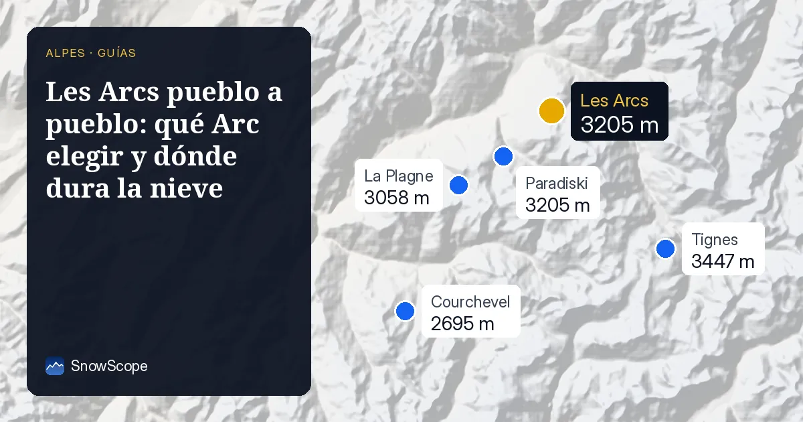

Les Arcs pueblo a pueblo: qué Arc elegir y dónde dura la nieve
Les Arcs se extiende por una montaña en cuatro pueblos construidos a propósito, apilados por altitud sobre Bourg-Saint-Maurice. Dónde te alojes define tu semana entera: cuánta nieve encuentras en la puerta, cómo llegas, y qué pistas te saludan cada mañana. La elección no es obvia, e importa más de lo que la mayoría piensa.
Consulta la previsión de nieve en tiempo real de Les Arcs en la app SnowScopeEspesor de nieve, alertas de nieve polvo y mapa 3D, gratis.

Arc 1600: el punto de partida accesible
Arc 1600 abrió en 1968 y sigue siendo el pueblo más fácil de alcanzar sin conducir. El funicular Arc en Ciel, construido en 1986, tarda unos 7 minutos desde la estación de Bourg-Saint-Maurice. Para familias que llegan en tren o quienes valoran un traslado corto sobre la altitud, esto solo puede resolver la decisión.
A 1 222 m, Arc 1600 se sitúa al pie de la montaña, así que recibe menos nieve. En el registro de 46 inviernos anteriores, la profundidad típica en su pico es de unos 84 cm. En contraste, solo dos semanas de la mayoría de inviernos tienen al menos 50 cm de nieve en esta altura. Las pistas de regreso al pueblo también son las primeras en adelgazar después de un deshielo. Si te alojas aquí, planifica tus días fuera de pista o terreno desafiante para enero y febrero, cuando la nieve es más profunda.

Arc 1800: la altura de compromiso
Arc 1800 abrió en 1974 como el segundo pueblo y conviene a quienes quieren terreno de media montaña sin el compromiso de altitud. Su posición se sitúa entre la base y nuestro punto de referencia de media montaña, así que la fiabilidad de la nieve aumenta a medida que avanza la temporada. Diciembre suele traer cobertura modesta, pero de enero en adelante el manto nivoso se espesa constantemente.
Este pueblo sirve a grupos que no quieren sacrificar ni el acceso ni la seguridad de nieve. Las pistas de regreso al pueblo, sin embargo, sufren temprano en el calor de primavera. Si tu vacación cae en marzo o después, es más prudente alojarse más arriba.
Arc 1950 y Arc 2000: los pueblos de nieve alta
Arc 2000 abrió en 1979 y Arc 1950, principalmente residencias, se completó en 2008. Ambos se sitúan cerca de 2 213 m, nuestra altura de referencia de media montaña, donde el panorama de nieve cambia completamente. Diciembre trae unos 68 cm en promedio, enero unos 115 cm, febrero unos 150 cm, y marzo unos 160 cm, con un pico típico de alrededor de 191 cm en un invierno completo. A esta altura, nueve de cada diez inviernos mantienen al menos 50 cm durante 21 semanas completas. Eso es diez veces más que en Arc 1600.
Estos pueblos también acortan el viaje a la Aiguille Rouge, la cumbre más alta de la zona, y a la pista olímpica de esquí de velocidad de 1992. En la parte superior del dominio, cerca de 3 205 m, el pico usual alcanza unos 379 cm, y abril se convierte en el mes más profundo con unos 315 cm. Si la fiabilidad de la nieve define tu elección, Arc 1950 o Arc 2000 es donde perteneces.
La altitud como tu margen de seguridad
Los últimos 46 inviernos revelan un patrón claro: la profundidad de nieve aumenta abruptamente con la altura. En la base, el invierno peor en registro vio solo 48 cm; el mejor logró 124 cm. En media montaña, esos rangos fueron 142 cm a 271 cm. Cerca de la cima, abarcan 288 cm a 552 cm. Si visitas en un año incierto o temprano en la temporada, los pueblos más altos ofrecen mucha más certeza.
El invierno pasado, 2025-26, mostró cómo importa esto. En la base el pico fue 100 cm; en media montaña alcanzó 212 cm; cerca de la cima, 342 cm. Un esquiador en Arc 1600 ese invierno tuvo la mitad de la nieve que uno en Arc 2000, incluso en la misma montaña.
Paradiski: expandiendo tu montaña
Desde diciembre de 2003, el telecabina Vanoise Express ha vinculado Les Arcs a Peisey-Vallandry y La Plagne, formando Paradiski con aproximadamente 425 km de pistas. Para una estancia de una semana, añadir uno o dos días de Paradiski suele ser suficiente para ampliar tus opciones sin comprar un pase completo de multi-estación. El cruce del telecabina en sí es una experiencia.
Una nota: el enlace de alta altitud puede cerrarse en viento fuerte o visibilidad pobre. Planifica tu día de Paradiski para clima tranquilo, y comprueba las condiciones antes de salir.
Cómo ha evolucionado la nieve
El registro a largo plazo muestra un cambio. En los primeros quince inviernos desde 1980-81, el pico típico en media montaña (2 213 m) fue de unos 212 cm y la zona vio nieve en el suelo durante unos 256 días. En los quince inviernos más recientes a través de 2025-26, esas cifras bajaron a unos 182 cm y 226 días. Los días de nieve se han reducido en aproximadamente un mes en cuatro décadas.
Esta tendencia significa que los pueblos más altos ofrecen más protección contra inviernos finos futuros. El invierno pasado se salió del patrón reciente con unos sólidos 212 cm en media montaña, pero apostar por la altitud más alta sigue siendo la estrategia más segura.
Consejos para esquiadores
- Llegando en tren: el funicular a Arc 1600 ahorra un traslado por carretera pero trae la nieve más fina. Planifica trabajo empinado o fuera de pista para enero o febrero cuando la base es más profunda.
- Para la nieve más fiable durante toda tu estancia, elige Arc 1950 o Arc 2000. A esa altura, 9 de cada 10 inviernos tienen buena nieve durante 21 semanas o más.
- Reserva un día de Paradiski solo si el pronóstico es tranquilo y claro en altitud alta. El viento cierra el enlace del telecabina regularmente.
- Consulta el boletín de aludes de Météo-France cada mañana antes de cualquier esquí fuera de pista, sea cual sea tu pueblo.
- Comprueba las aperturas de remontes en el sitio web de la estación antes de reservar. La nieve en nuestro mapa no significa que la estación esté en funcionamiento.
Sobre estas cifras
Los espesores de nieve de las estaciones son la nieve más profunda en las pistas altas en la fecha indicada; son estimaciones para una zona, no una medida en un punto. Las previsiones pueden cambiar. Consulta siempre el boletín oficial de aludes antes de salir fuera de pista.
Boletines oficiales de aludes: Météo-France BERA
Citar este informe
Para investigación, docencia o prensa: cifras y gráficos reutilizables libremente bajo CC BY 4.0 con esta cita.
SnowScope (2026), Les Arcs pueblo a pueblo: qué Arc elegir y dónde dura la nieve, https://snowscope.app/blog/es/2026/11/les-arcs-village-by-village-snow-paradiski.html, consultado el 2026-11-09
SnowScope (Atlas Labs). (2026, November 9). Les Arcs pueblo a pueblo: qué Arc elegir y dónde dura la nieve. SnowScope snow reports. https://snowscope.app/blog/es/2026/11/les-arcs-village-by-village-snow-paradiski.html
BibTeX
@misc{snowscope2026lesarcsvillagebyvillages,
author = {{SnowScope (Atlas Labs)}},
title = {Les Arcs pueblo a pueblo: qué Arc elegir y dónde dura la nieve},
year = {2026},
month = nov,
howpublished = {\url{https://snowscope.app/blog/es/2026/11/les-arcs-village-by-village-snow-paradiski.html}},
note = {Published 2026-11-09 18:59 UTC; accessed 2026-11-09}
}· CC BY 4.0 · Métodos, datos y herramientas →
Les Arcs: nieve y temperatura según la altura, este invierno vs el pasado (herramientas) →
Sigue Les Arcs
Gratis: un aviso cuando llega la nieve y la previsión cada mañana.